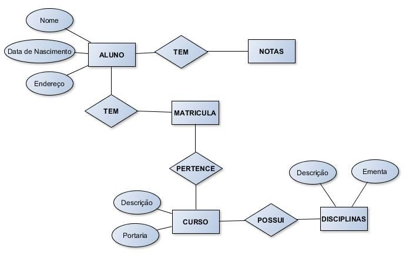

MER - Modelo Entidade Relacionamento
No inicio de um novo projeto ou quando iremos adicionar uma nova funcionalidade á algum já existente. Caso tal
projeto possua um Banco de Dados, é importante fazermos um levantamento de requisitos para termos uma noção de como será feita
essa criação/adição. Ao fazermos essa análise temos noção de quais serão as partes principais do projeto, quais serão as funões e
quais serão as responsabilidades do projeto.
Após termos noção disso tudo, criamos um MER, um Modelo Entidade Relacionamento, que resumidamente é um Modelo que permite nos dar
uma noção de como será criado o Banco de Dados Relacional. Quais serão as entidades, que relações elas terão uma com a outra e como
o banco irá funcionar.
Abaixo está a imagem de um MER, podemos ver as Entidades (Tabelas) representadas por um retângulo, os relacionamentos por um
losângulo e os Atributos (Conteúdo dentro das Tabelas) por ovais.

Muitas vezes ele não é feito, acaba sendo mais prático fazer direto um DER. Continue lendo sobre esse
assunto indo pra página DER.
Páginas Relacionadas: DER